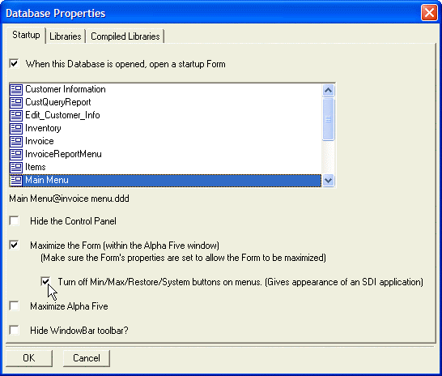

Creating and Assigning a Startup Form
The term Startup Form refers to the form which automatically appears when a database is opened. You can use any form from any table or set as a Startup Form.
To make a Form the Startup Form:
In the Control Panel select File > Database Properties.
The Database Properties window appears.

Database Properties
In the Database Properties window, you can specify which form in the current database should run on startup. There are also additional options for customizing the behavior of Alpha Anywhere on startup.
You can specify that Alpha Anywhere:
hide the Control Panel
maximize the MDI child window
maximize Alpha Anywhere itself
hide the Window Bar
SDI Style Applications
You can create applications that resemble SDI (Single Document Interface) applications. A SDI application does not have min/max/restore buttons on the menu bar. To specify a SDI style application, select File > Database Properties and select the Turn off Min/Max check box. ( Note : This check box only appears if you have specified a startup Form, and if you have specified that the startup form should be maximized).